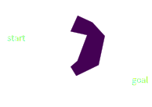

Finding Optimal Robot Motion
Bryce Willey
January 22th, 2018

Benefits of Robots:
- can assist people with disabilities/immobility
- can complete tasks that are unsafe or impossible for humans
To reliably use robots in uncontrolled environments, teleoperation is the current best choice
- Limits deployment to skilled operators
Automating these tasks allows widespread deployment
Motion planning is essential to automation.
Feasible Motion Planning

- Finds a connected path from start to goal
- Doesn't collide with any obstacles
Optimal Motion Planning
- Assigns a cost to every path $$ C:\sigma \to \mathbb{R}$$
- Finds a feasible path that minimizes the cost
- Sampling Based Planners (Kavraki, 1994, LaValle, 1998)
- Optimization Based Planners (Ratliff et al., 2009, Kalakrishnan et al., 2011)
Currently, few rigorous comparisons in the literature
Planners:
- Sampling: RRT-Connect, PRM, BIT*
- Optimization: TrajOpt, CHOMP, GPMP2
TrajOpt = 6/8 scenes
CHOMP = 4/8 scenes
GPMP2 = 7/8 scenes
RRT-Connect = 8/8 scenes
PRM = 8/8 scenes, 87.5% of the tries
BIT* = 8/8 scenes

Planners:
- Sampling: RRT-Connect, PRM, BIT*
- Optimization: TrajOpt, CHOMP, GPMP2


Pros
- Probabilistic Completeness
- Very reliable
- Can find optimal paths
Cons
- Must smooth the path after finding it
- Finding optimal paths is time consuming
Pros
- 5-10x Faster
- Quality, smooth paths
Cons
- No guarantee of finding a feasible path
- Not as reliable as sampling planners
Optimization planners do special 'tricks' to speed up planning
What really makes optimization planners faster?
- Discretizes 3D space into a fine grid
- Calculates distance and gradient from each cell to closest obstacle border
- > 0 if the cell lies outside of the obstacle
- < 0 if the cell is inside an obstacle

Usually done precisely using collision libraries (FCL, Bullet, etc)
Can be approximated using signed distance fields
Approximating the robot using spheres makes getting collision information O(1)
Abstract signed distance fields and compare speed ups in sampling planners
Test on a wider variety of planning problems
Use sampling and optimization together: quality motion and faster convergence
Possible sources of performance in optimization planners is under investigation
Best motion planner is dependent on your specifications